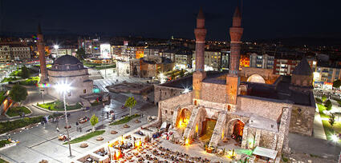

Şemseddin Cüveyni tarafından yaptırılmıştır.[1] Medrese, süslemeli taç kapısı ve tuğla-çini örgülü iki minaresi ile dikkati çekmektedir. Medresenin kapalı mekânı yok olmuş, sadece doğu yönündeki minarelerin bulunduğu asıl cephe yüzeyi ayakta kalmıştır. Şifaiye Medresesi'nin tam karşısında yer almaktadır.

Şehrimizin tam ortasında bulunan çifte minareli medrese sivasın gözbebeğidir